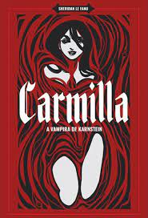

|  |
Cerca de quinze anos antes de Drácula , um livro sobre vampiros marcou a literatura gótica e estabeleceu-se entre os clássicos de horror: Carmilla , de Joseph Sheridan Le Fanu. Aliás, não um livro sobre vampiros, sobre “ a vampira ”. A lasciva personagem que dá título ao conto tornou-se uma das mais impactantes figuras do imaginário vampiresco na história. A obra é narrada por Laura, jovem que vive isolada com o pai em um castelo na Estíria – região do antigo império austro-húngaro. Uma hóspede inesperada, entretanto, despertará os sentimentos amorosos da jovem Laura, ao mesmo tempo que lhe causará certo terror ao trazer de volta antigos pesadelos da infância. Carmilla é um conto sobre sedução e horror, criaturas ancestrais e o despertar da maturidade, amor e repulsa. Um clássico excitante para os amantes do gênero. |